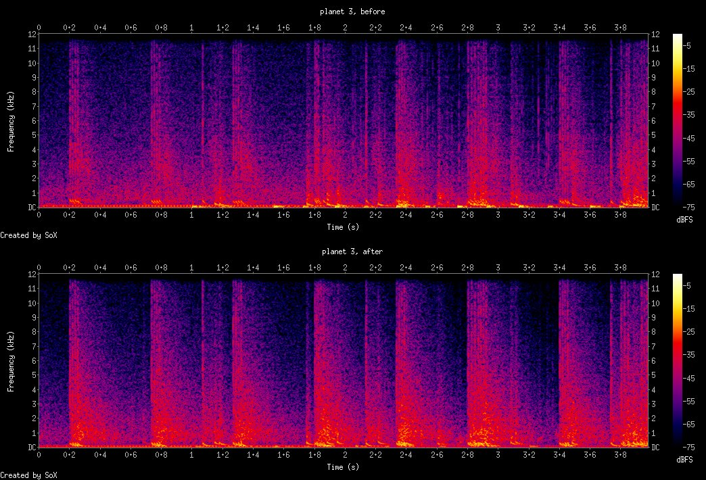

<title>Sound Pass One</title>
<meta name="claude:viewport-fit-sides" content="cover">
<link rel="preconnect" href="https://fonts.googleapis.com">
<link rel="stylesheet" href="https://fonts.googleapis.com/css2?family=IBM+Plex+Sans:wght@400;500;600&family=IBM+Plex+Mono:wght@400;500&display=swap">
<style>
/* Layout: one listening column; each planet a before/after pair with its counts beside it. */
:root {
  --bg: #f4f6f3;
  --panel: #ffffff;
  --fg: #1d2420;
  --muted: #5d6a62;
  --line: #d6ddd7;
  --slime: #5f8f2e;
  --old: #9a6a3c;
  --sans: "IBM Plex Sans", system-ui, -apple-system, "Segoe UI", sans-serif;
  --mono: "IBM Plex Mono", ui-monospace, "SFMono-Regular", Menlo, monospace;
}
@media (prefers-color-scheme: dark) {
  :root:not([data-theme="light"]) { --bg: #121613; --panel: #1a201c; --fg: #e3e9e4; --muted: #9aa79f; --line: #2c3530; --slime: #9fcf5f; --old: #d39b66; color-scheme: dark; }
}
:root[data-theme="dark"] { --bg: #121613; --panel: #1a201c; --fg: #e3e9e4; --muted: #9aa79f; --line: #2c3530; --slime: #9fcf5f; --old: #d39b66; color-scheme: dark; }
body { background: var(--bg); color: var(--fg); font-family: var(--sans); font-size: 16px; line-height: 1.55; }
main { max-width: 860px; margin: 0 auto; padding-block: 32px 64px; padding-left: max(16px, env(safe-area-inset-left, 0px)); padding-right: max(16px, env(safe-area-inset-right, 0px)); display: grid; gap: 36px; }
h1 { font-size: 1.9rem; margin: 0; line-height: 1.2; text-wrap: balance; }
h2 { font-size: 1.2rem; margin: 0 0 10px; text-wrap: balance; }
p { margin: 0; max-width: 66ch; }
.lede { display: grid; gap: 10px; }
.meta { color: var(--muted); font-size: 0.9rem; }
ul.changes { margin: 0; padding-left: 1.1em; display: grid; gap: 6px; max-width: 70ch; }
section { display: grid; gap: 12px; }
.pair { background: var(--panel); border: 1px solid var(--line); border-radius: 8px; padding: 16px; display: grid; gap: 12px; }
.pair h3 { margin: 0; font-size: 1rem; }
.pair .what { color: var(--muted); font-size: 0.92rem; }
.sides { display: grid; grid-template-columns: 1fr 1fr; gap: 14px; }
@media (max-width: 640px) { .sides { grid-template-columns: 1fr; } }
.side { display: grid; gap: 8px; min-width: 0; }
.tag { font-family: var(--mono); font-size: 0.75rem; letter-spacing: 0.08em; text-transform: uppercase; }
.tag.before { color: var(--old); }
.tag.after { color: var(--slime); }
audio { width: 100%; }
.bars { display: grid; gap: 4px; font-family: var(--mono); font-size: 0.8rem; font-variant-numeric: tabular-nums; }
.bar { display: grid; grid-template-columns: 5.5em 1fr 3em; align-items: center; gap: 8px; }
.bar i { display: block; height: 8px; border-radius: 2px; background: var(--muted); opacity: 0.55; }
.bar.gun i { background: var(--slime); opacity: 1; }
.bar span:last-child { text-align: right; }
.counts { font-family: var(--mono); font-size: 0.78rem; color: var(--muted); font-variant-numeric: tabular-nums; }
.chapters { display: flex; flex-wrap: wrap; gap: 8px; }
.chapters button { font: 500 0.85rem var(--sans); color: var(--fg); background: var(--panel); border: 1px solid var(--line); border-radius: 6px; padding: 6px 10px; cursor: pointer; }
.chapters button:hover { border-color: var(--slime); }
.chapters button:focus-visible { outline: 2px solid var(--slime); outline-offset: 2px; }
figure { margin: 0; display: grid; gap: 6px; }
figure img { border-radius: 6px; border: 1px solid var(--line); }
figcaption { color: var(--muted); font-size: 0.88rem; max-width: 70ch; }
table { border-collapse: collapse; font-size: 0.88rem; font-variant-numeric: tabular-nums; }
.scroll { overflow-x: auto; }
td, th { padding: 4px 10px 4px 0; text-align: left; border-bottom: 1px solid var(--line); white-space: nowrap; }
th { color: var(--muted); font-weight: 500; }
</style>

<main>
  <header class="lede">
    <h1>Sound Pass One</h1>
    <p>The first batch of the sound overhaul: the mix and the guns. The same three games are played twice by the same bot with the same seed, once on the old sound and once on the new, so the only difference is the sound. Use headphones or real speakers; a laptop speaker hides the old sound's main fault, the rumble.</p>
    <p class="meta">2026-11-20 · recorded headless with the game's own sound engine (run seed 1, 48 kHz), 20 s from each game · bars show each source's share of the sound's energy over the whole game</p>
  </header>

  <section>
    <h2>What changed</h2>
    <ul class="changes">
      <li><b>Each gun has its own shot</b>, built from a crack, a punch and a report that rolls off. The rifle is firm, the carbine light and quick, the long gun deep with a bolt after it, and the scattergun one wide blast with a pump. Turrets ring metallic and sit under the squad. A scattergun's pellets are one shot, not four ticks.</li>
      <li><b>Less rumble and wash.</b> The heartbeat is quieter and starts later: with slime within about a third of the gun's range, or with walkers on a soldier, counted by how many (one walker brushing a soldier used to be full danger, and it beat through most of every fight). The slime's drone is a third quieter. The reverb is now per sound: a gun's report rings, while the pulse, the drone and the background textures stay dry.</li>
      <li><b>A new hit</b>, a wet slap with a squelch set where small speakers can play it. A big kill is still lower and longer than a graze.</li>
      <li><b>Kills pop instead of hiss.</b> Each walker killed is a small wet bubble-pop instead of a 2 to 5 kHz crackle that sounded like radio static.</li>
      <li><b>Distance is duller as well as quieter</b>, so a fight across the map no longer sounds like the one on screen. The banking chime plays at most every 2.5 s instead of every second, and sounds that cut each other off now fade out instead of clicking.</li>
    </ul>
  </section>

  <section>
    <h2>Before and after, planets 1 to 3</h2>

    <div class="pair">
      <h3>Planet 3, the Trunk: a normal squad fighting</h3>
      <p class="what">The squads bot, 50 to 70 s. 1,028 shots and 5,932 walkers killed over the 120 s game, the same in both.</p>
      <div class="sides">
        <div class="side">
          <span class="tag before">Before</span>
          <audio controls preload="none" src="p3-before.mp3"></audio>
          <div class="bars">
            <div class="bar gun"><span>gun</span><i style="width:7%"></i><span>7%</span></div>
            <div class="bar"><span>reverb</span><i style="width:25%"></i><span>25%</span></div>
            <div class="bar"><span>hits</span><i style="width:24%"></i><span>24%</span></div>
            <div class="bar"><span>drone</span><i style="width:21%"></i><span>21%</span></div>
            <div class="bar"><span>heartbeat</span><i style="width:19%"></i><span>19%</span></div>
          </div>
          <div class="counts">heartbeats 149 · rumble under 100 Hz 41%</div>
        </div>
        <div class="side">
          <span class="tag after">After</span>
          <audio controls preload="none" src="p3-after.mp3"></audio>
          <div class="bars">
            <div class="bar gun"><span>gun</span><i style="width:54%"></i><span>54%</span></div>
            <div class="bar"><span>reverb</span><i style="width:7%"></i><span>7%</span></div>
            <div class="bar"><span>hits</span><i style="width:21%"></i><span>21%</span></div>
            <div class="bar"><span>drone</span><i style="width:11%"></i><span>11%</span></div>
            <div class="bar"><span>heartbeat</span><i style="width:2%"></i><span>2%</span></div>
          </div>
          <div class="counts">heartbeats 118 · rumble under 100 Hz 13%</div>
        </div>
      </div>
    </div>

    <div class="pair">
      <h3>Planet 2, the Sprawler: a squad under pressure</h3>
      <p class="what">The squads bot, 40 to 60 s. The slime reaches the squad and eight soldiers fall by 84 s, in both games.</p>
      <div class="sides">
        <div class="side">
          <span class="tag before">Before</span>
          <audio controls preload="none" src="p2-before.mp3"></audio>
          <div class="bars">
            <div class="bar gun"><span>gun</span><i style="width:4%"></i><span>4%</span></div>
            <div class="bar"><span>reverb</span><i style="width:25%"></i><span>25%</span></div>
            <div class="bar"><span>hits</span><i style="width:25%"></i><span>25%</span></div>
            <div class="bar"><span>drone</span><i style="width:7%"></i><span>7%</span></div>
            <div class="bar"><span>heartbeat</span><i style="width:25%"></i><span>25%</span></div>
          </div>
          <div class="counts">heartbeats 193 · rumble under 100 Hz 37%</div>
        </div>
        <div class="side">
          <span class="tag after">After</span>
          <audio controls preload="none" src="p2-after.mp3"></audio>
          <div class="bars">
            <div class="bar gun"><span>gun</span><i style="width:36%"></i><span>36%</span></div>
            <div class="bar"><span>reverb</span><i style="width:6%"></i><span>6%</span></div>
            <div class="bar"><span>hits</span><i style="width:29%"></i><span>29%</span></div>
            <div class="bar"><span>drone</span><i style="width:5%"></i><span>5%</span></div>
            <div class="bar"><span>heartbeat</span><i style="width:4%"></i><span>4%</span></div>
          </div>
          <div class="counts">heartbeats 141 · rumble under 100 Hz 10%</div>
        </div>
      </div>
    </div>

    <div class="pair">
      <h3>Planet 1, the Drifter: a big army</h3>
      <p class="what">The greedy bot, which buys 40 soldiers, 60 to 80 s. 1,893 shots over 150 s, many off screen, so distance matters most here.</p>
      <div class="sides">
        <div class="side">
          <span class="tag before">Before</span>
          <audio controls preload="none" src="p1-before.mp3"></audio>
          <div class="bars">
            <div class="bar gun"><span>gun</span><i style="width:9%"></i><span>9%</span></div>
            <div class="bar"><span>reverb</span><i style="width:26%"></i><span>26%</span></div>
            <div class="bar"><span>hits</span><i style="width:18%"></i><span>18%</span></div>
            <div class="bar"><span>drone</span><i style="width:17%"></i><span>17%</span></div>
            <div class="bar"><span>heartbeat</span><i style="width:21%"></i><span>21%</span></div>
          </div>
          <div class="counts">heartbeats 236 · banking chimes 117 · rumble under 100 Hz 34%</div>
        </div>
        <div class="side">
          <span class="tag after">After</span>
          <audio controls preload="none" src="p1-after.mp3"></audio>
          <div class="bars">
            <div class="bar gun"><span>gun</span><i style="width:61%"></i><span>61%</span></div>
            <div class="bar"><span>reverb</span><i style="width:9%"></i><span>9%</span></div>
            <div class="bar"><span>hits</span><i style="width:14%"></i><span>14%</span></div>
            <div class="bar"><span>drone</span><i style="width:8%"></i><span>8%</span></div>
            <div class="bar"><span>heartbeat</span><i style="width:2%"></i><span>2%</span></div>
          </div>
          <div class="counts">heartbeats 127 · banking chimes 53 · rumble under 100 Hz 11%</div>
        </div>
      </div>
    </div>
  </section>

  <section>
    <h2>The guns, one at a time</h2>
    <p>Each gun three times on screen, three times a view off screen (duller and quieter), then a squad of four firing it together twice.</p>
    <audio id="guns" controls preload="none" src="guns.mp3"></audio>
    <div class="chapters" aria-label="Jump to a gun">
      <button type="button" data-t="0">Rifle</button>
      <button type="button" data-t="6.8">Carbine</button>
      <button type="button" data-t="13.6">Long gun</button>
      <button type="button" data-t="20.4">Scattergun</button>
      <button type="button" data-t="27.2">Turret</button>
    </div>
  </section>

  <section>
    <h2>The hit, by walkers killed</h2>
    <p>A rifle shot once a second, each killing more: stopped by rock (no hit), then 0, 1, 5, 15, 37, 56 and 80 walkers killed. The weight follows the kill count, so an effect is never bigger than its damage.</p>
    <audio id="hits" controls preload="none" src="hits.mp3"></audio>
  </section>

  <section>
    <figure>
      
      <figcaption>Four seconds of planet 3 (60 to 64 s), before above and after below; height is pitch up to 12 kHz, brightness is level. Before, a wash fills every gap. After, each volley stands alone and the gaps go dark.</figcaption>
    </figure>
  </section>

  <section>
    <h2>How it was measured</h2>
    <div class="scroll">
      <table>
        <tr><th>Planet</th><th>Bot</th><th>Seconds</th><th>Loudness before</th><th>Loudness after</th></tr>
        <tr><td>1</td><td>greedy</td><td>150</td><td>−18.2 LUFS</td><td>−16.2 LUFS</td></tr>
        <tr><td>2</td><td>squads</td><td>84 (squad lost)</td><td>−15.7 LUFS</td><td>−15.4 LUFS</td></tr>
        <tr><td>3</td><td>squads</td><td>120</td><td>−18.2 LUFS</td><td>−16.8 LUFS</td></tr>
      </table>
    </div>
    <p class="meta">The shares come from the voice bank's new mix meter (energy each source put in before the master), printed by <code>larder-world look=… sound=FILE.wav</code>; rumble and loudness come from the WAV. Energy weighs bass heavily, so the old drone and heartbeat count for more here than a small speaker plays. Planets 1 and 3 are 1.5 to 2 dB louder overall because the guns are louder and fill the mix; the limiter touched 0.04% to 0.18% of samples.</p>
  </section>
</main>

<script>
  const players = Array.from(document.querySelectorAll("audio"));
  players.forEach(a => a.addEventListener("play", () => players.forEach(b => { if (b !== a) b.pause(); })));
  const guns = document.getElementById("guns");
  document.querySelectorAll(".chapters button").forEach(btn => btn.addEventListener("click", () => {
    guns.currentTime = Number(btn.dataset.t);
    guns.play().catch(() => {});
  }));
</script>
